Sprouts
State of the Game
Overnight, Sprouts TV 2 worked through almost every item in last night's review. The story now has a midpoint and one ending. Marcus arrives on day one, Ranger and Scout have stories, every story scene is 3D, and the pop-ups are gone. A bot that only presses the controller's buttons finished the whole game three times. What's left is the one thing no script can do: a person playing it on the couch and saying whether it's fun.
Since last night
| Last night's review said | Sprouts TV 2 | |
|---|---|---|
| The ending comes on day 2, before half the game | The four shards are a midpoint: the Lantern is whole and still skips. One ending, after the relight | Done |
| Marcus arrives on day 3 with three asks | Met a quarter of the way through day 1, locked out of his own job site, with five asks | Done |
| Ranger and Scout are placeholders | A scene each, a story ask, a line for every turn, and Scout's notebook | Done |
| Day 4 is thin; nothing to come back for | The wedding book, expeditions, night grubs, rain days, the notebook, Marcus's bet | Done |
| Constant toasts, fast ranks | Rewards are read out in the evening report. Zero toasts on day 1 of today's story run | Done |
| Hint banner covers the house and field | Hints sit in a bottom strip | Done |
| Erase Everything sits in the main menu | Moved to Settings | Done |
| Two copies of Sprouts | One source, two builds (TV and phone) inside TV 2. alt/ and sprouts-tv/ remain as they were | Partly |
| Couch co-op, photo mode, weather, Louie's day | Player two is Louie; photo mode; rain days; Louie's morning | Done |
| Canon still unconfirmed | More of it now: the new scenes and lines are all marked as Claude's in STORY-NOTES | Yours |
| Van jokes and the age rating | Left as they are, by your call; the van now has its own reggae theme | Your call |
| Play it on the TV with a pad | Still not done by a person | Open |
Also new, beyond the review: a cutscene audit that fixed eleven staging problems (the van now drives nose first with Derek at the wheel); nine more 3D scenes; a Controls page and credits; save import from Sprouts TV and Pocket Lantern; a bot that plays the whole game with buttons only; and the music rebuilt as one looping song (Autumn Study) plus six cutscene themes written as notes.
Where it stands
What exists
- The loop: pluck, throw, carry home; six kinds with jobs; the Lantern makes more.
- The story: four shards (midpoint), the call, the North Coast, the flooded lamp room, the Flow Pros job, the lens, the relight and one ending. After it, the North Light rests, and the wedding book fills.
- People: Erin (12 asks), Scout (7), Ranger (6), Marcus (5), Thornback, Derek and Louie.
- After the ending: wedding book, expeditions, the notebook, night grubs, rain, glimmers, projects.
- Ways to play: TV (16:9, controller), phone build, a second controller as Louie, photo mode.
What that means
- This is the closest of your games to finished. The CHANGELOG's own word for this round is "locking in".
- Every step of the story is shown possible with real controls. Whether it's clear and fun is unproven.
- The remaining work is yours more than Claude's: play it, rule on the canon, judge the music, decide where it lives.
Frames from this morning's build
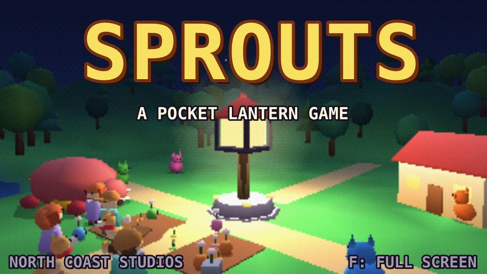
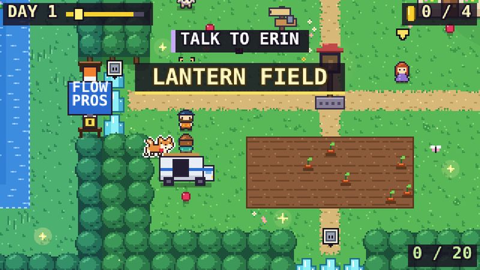
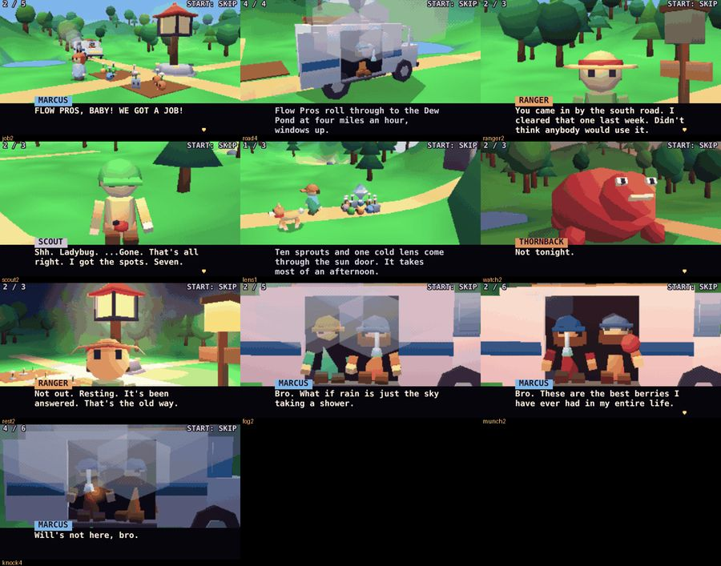
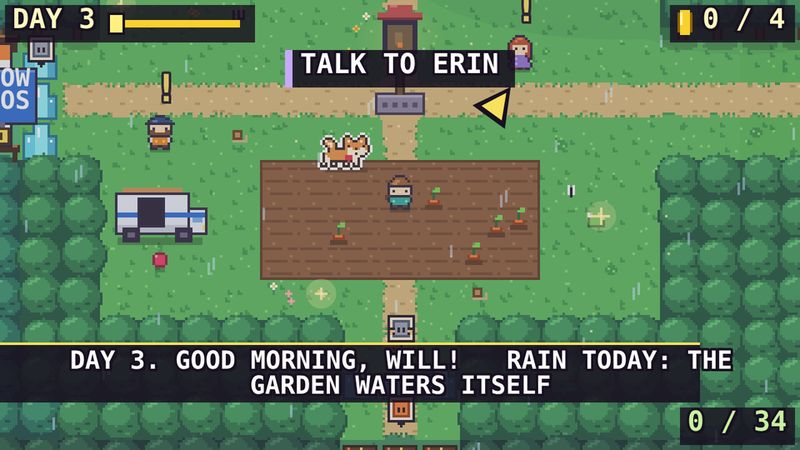
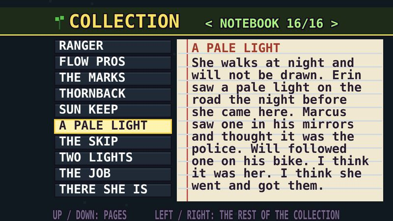
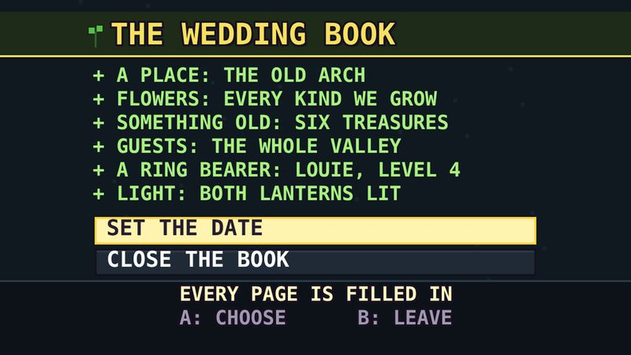
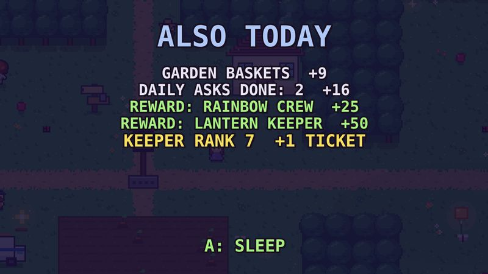
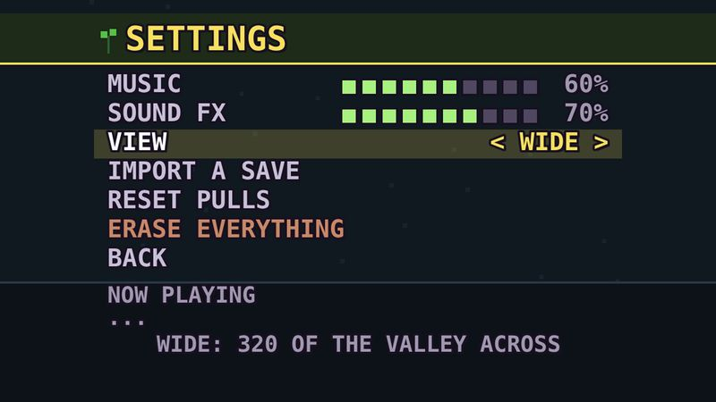
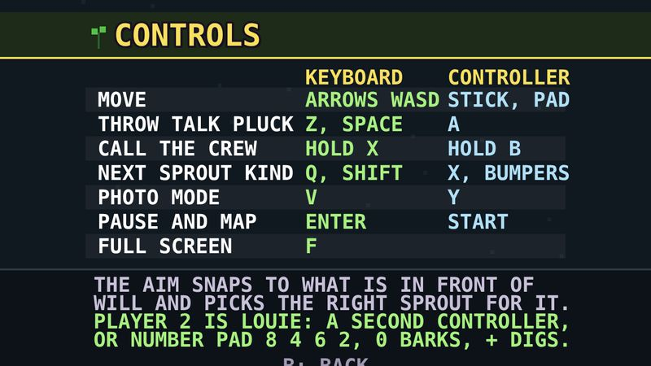
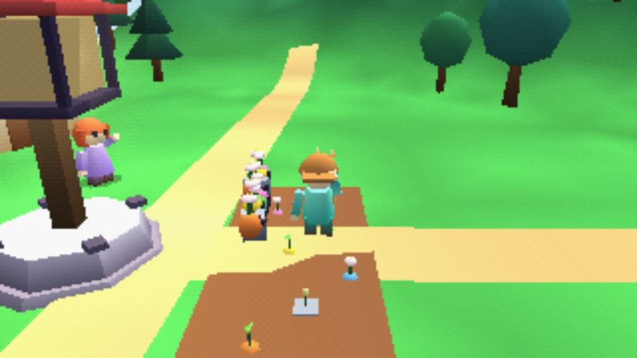
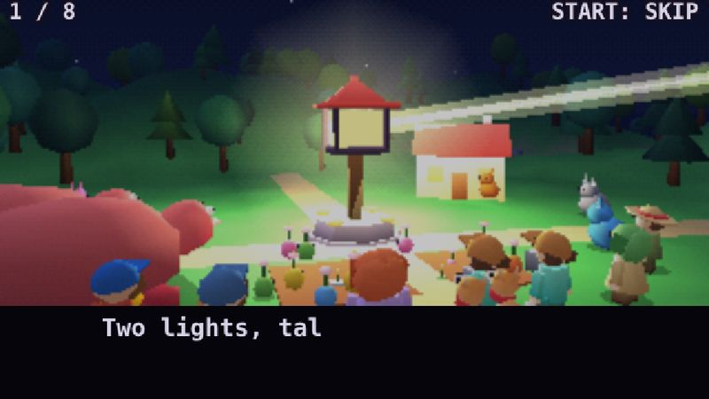
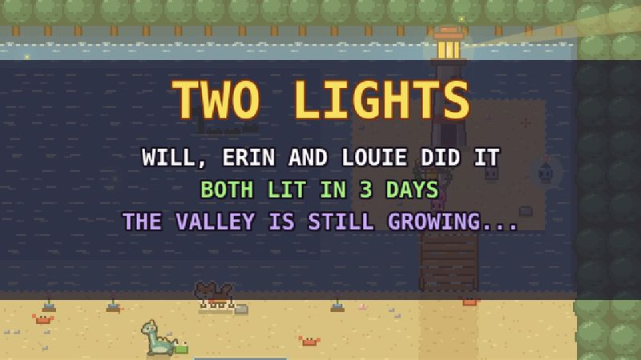
How the story is layered
This is the honest run: a bot playing from a new game with the controller's buttons only, nothing carried or opened for it. A person will be slower and will get lost, so read the days as a floor. The first act now ends at a midpoint on day 3, the second act runs to the ending on day 5, and the epilogue carries on to the wedding date on day 11.
What the new shape gets right
- The whole cast is met before noon on day 1, so every later scene has people you know in it.
- The midpoint is a real turn: the Lantern is whole, and it still skips. That's a better hook than an early "you did it".
- The second act has steps (coast, pier, lamp room, the job, the lens) instead of one carry.
- The ending lands at night with everyone there, and the credits roll before the TWO LIGHTS card.
What to watch
- Day 1 is very full. Four people, three scenes, the garden, the key and the house, all by the end of day 1 even at a bot's pace. A person might feel rushed. The pointer arrow still changes 26 times on day 1 of the story run.
- A quiet day 2. The story run shows almost nothing new on days 2 and 3 between shards. That may be the right breather; it needs a person to say.
- The epilogue is long. Six days from the ending to the wedding date. Worth checking that it feels like a reward, not a list.
- Louie reached his top level by about day 8 and keeper rank 14 by day 11 in the honest run. The CHANGELOG itself asks whether that is still too fast.
Against its sources
Unchanged from last night in kind; what moved is in bold.
| Source idea | Sprouts TV 2 | Fit |
|---|---|---|
| Pluck, throw, swarm, carry home (Pikmin) | The same, with auto-aim and a throw that now wins over nearby posts and signs | Close |
| Colours with jobs | Six kinds; Dews now swim the island shard home | Close |
| Ship parts as the goal | Four shards (midpoint), then the lens for the North Light | Close |
| Enemies that eat your crew | Night grubs eat seedlings in the soil, never the crew | Its own (gentle) |
| Neighbours with requests (Stardew, Animal Crossing) | 30 asks, and Ranger and Scout now have stories | Close |
| Weather | Rain days water beds, bring snails and a frog, keep grubs in | Close |
| A pet companion | Louie, now playable by a second player, with his own morning | Better |
| Expeditions (Pikmin Bloom) | After the ending: five house sprouts carry the light down a road | Close |
Mechanics
Who gives you things to do
What the 34 scenes are
How often the game interrupts you
Toasts are gone: rank-ups, baskets and daily asks now wait for the evening report. What remains is mostly the pointer arrow changing target (26 times on day 1, 20 on day 4), plus new-sprout cards. The arrow is useful, but day 1 still has a lot of "go here, now go there". Both runs are bots, so read this for shape, not numbers.
Scorecard
Succeeding
- Turning a review into a build overnight. The CHANGELOG checks off each review item, with honest notes on what wasn't touched and why.
- The honest run. Proving every step is reachable with buttons only, and fixing four real dead ends it found (Louie's heart vs Erin's talk, throws next to posts, Ranger's unreachable post, an empty-crew safety net that never fired).
- Story shape. A midpoint, a second act with steps, one ending, credits.
- Cast. Everyone met early; Ranger and Scout are people now.
- Louie. Still the heart of it, and now a second player can be him.
- Size. 13.8 MB down to 2.6 MB per build, with a phone build from the same source.
- Test discipline. Tests that hold the game's clock still, so a run gives the same result every time.
Lacking
- A person has still not played it. Not on a TV, a phone or a real controller. Nothing has been listened to, including the six new themes and the loop point of the song.
- Canon. Nine new scenes and many new lines are Claude's. STORY-NOTES lists them; they need your yes or no.
- Pace. A packed day 1, then a long epilogue. Louie maxes out by about day 8.
- Three copies.
alt/,sprouts-tv/andsprouts-tv2/all exist. Only TV 2 has today's work. - Not published. TV 2 lives only in the repo. If you want to play it from the phone, it needs a page.
- Tone. The van humour stays by your call; it still sets the age rating.
Known bugs and risks
| Level | Issue | Source |
|---|---|---|
| Check | sprouts_story.js (the autopilot) failed one run in four on Nov 19 and passed the next three | README |
| Check | The TV suite's two timing checks (title appearing, 1080p frame under 16 ms) fail on a busy machine; they passed when run alone (10.3 ms) | My run today |
| Check | Photo mode places people by map position; they can stand slightly off from the 2D view | Changelog |
| Check | A grub raid in progress isn't saved; loading mid-raid gives ordinary grubs | Changelog |
| Check | Marcus stands three tiles from the Lantern's soil; A at him talks, which may get in the way of plucking | Changelog |
| Visible | The title still reads "A Pocket Lantern game" | Seen in frame |
| Unheard | The song's loop point and the six cutscene themes | Changelog |
| Untested | Expeditions were not sent in the honest run; hidden scenes are checked by trigger, not reached by the bot | Changelog |
| Open | Three copies of Sprouts in the repo | README |
Ideas from here
Before calling it done
- One evening on the TV with a pad; one session on the phone. Five notes each.
- Listen to the song loop and the six themes (
playtest/music/has them). - Rule on STORY-NOTES: keep, change or cut each of Claude's lines.
- Publish TV 2 and the phone build as pages.
Small, high value
- Let day 1 breathe: hold Scout or the house until day 2.
- Slow Louie's last two levels so he's still growing in the epilogue.
- Change the title line to "A North Coast Studios game".
- Retire
sprouts-tv/once TV 2 is the one you play.
Development timeline
From the Dev Board (to Nov 14) and the repo (Eastern time). Sprouts TV 2 is the fourth home for the same game, and the first that is meant to be finished.
Proposed order from here
Play it and listen to it
TV with a pad, the phone, the music. Write down what's unclear, slow or annoying.
Rule on the canon
Go through STORY-NOTES and mark each Claude line keep, change or cut.
Tune from your notes
Day 1 density, Louie's levels, the epilogue's length, grubs, rain frequency.
Publish and retire
Publish TV 2 and Pocket as pages; retire the older copies; then decide on Steam.